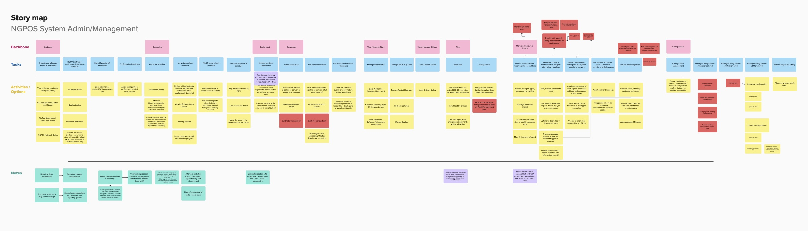
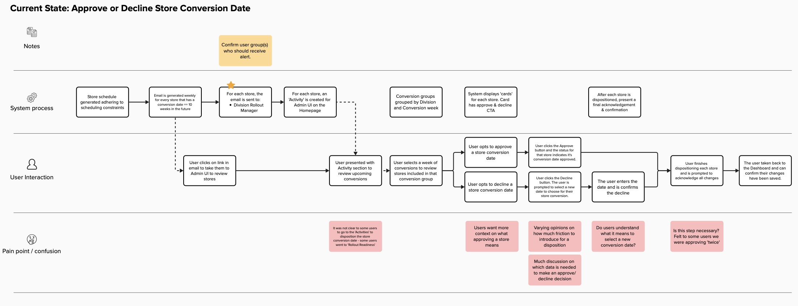
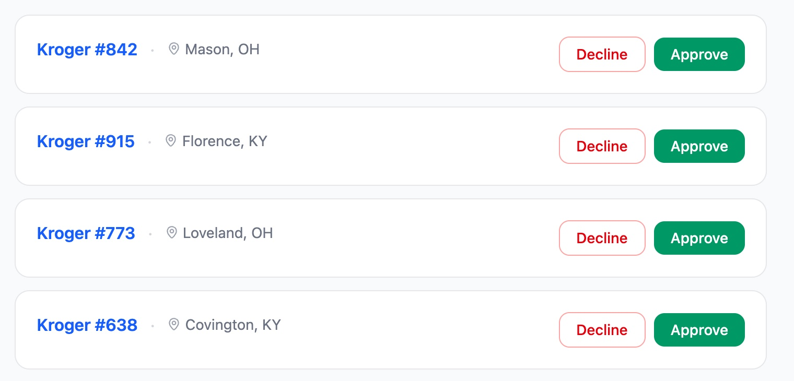
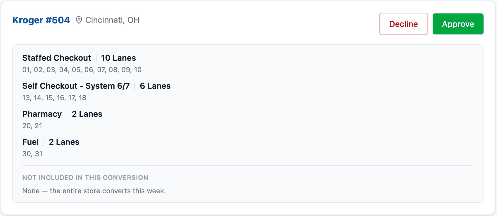
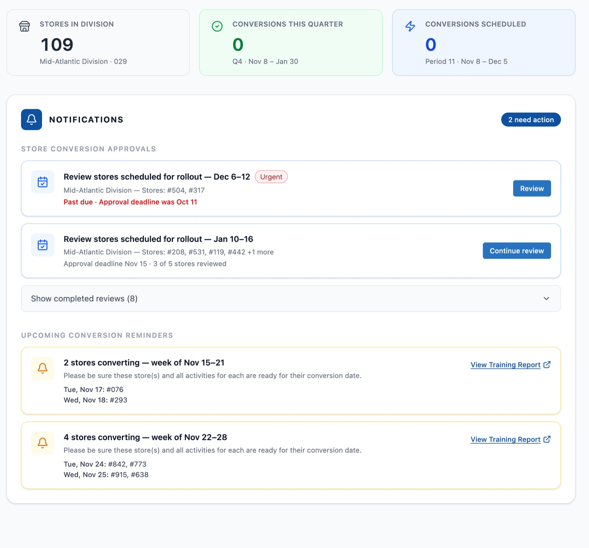
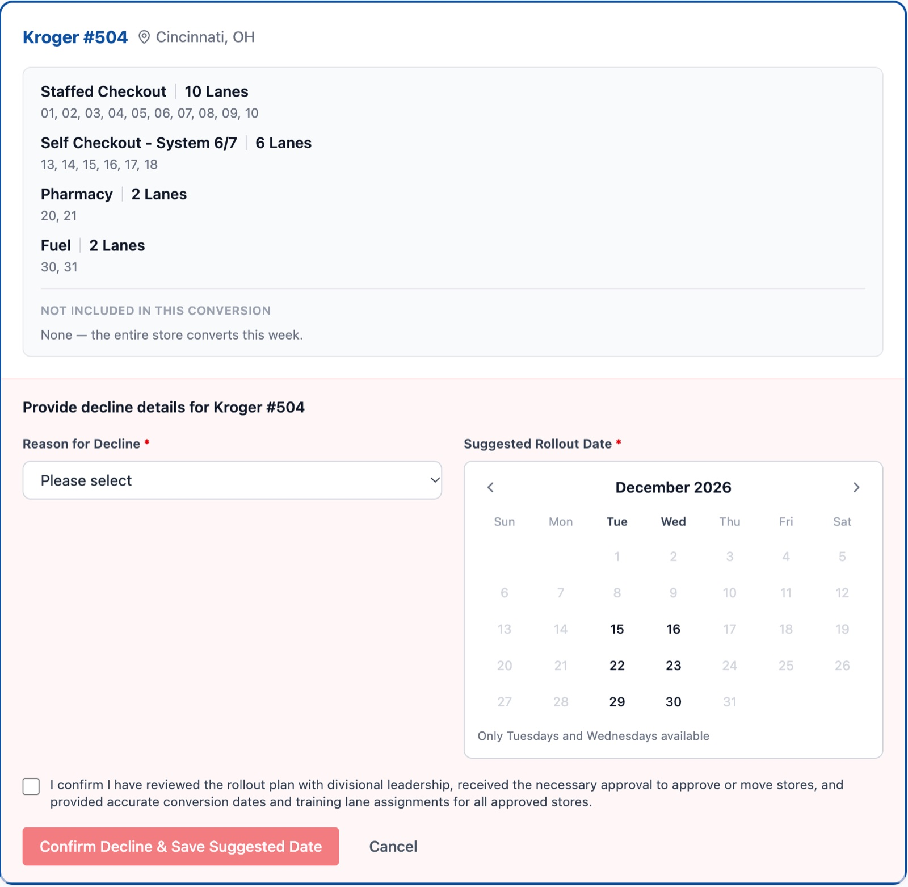
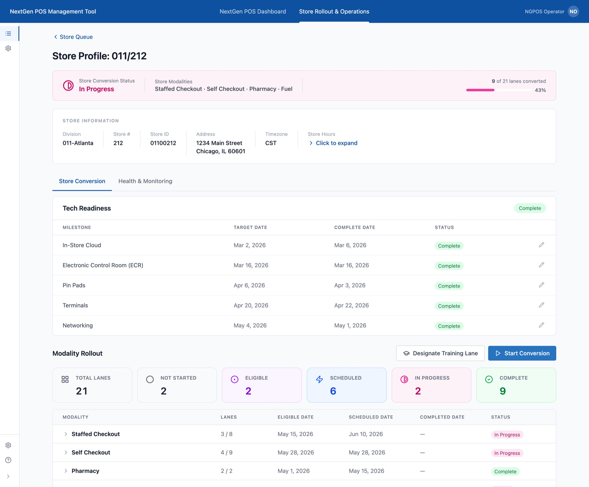
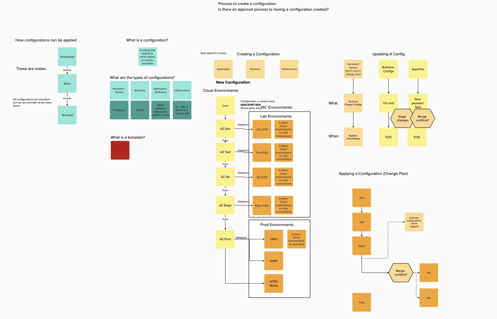
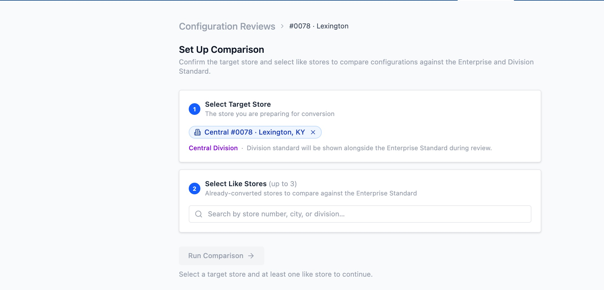
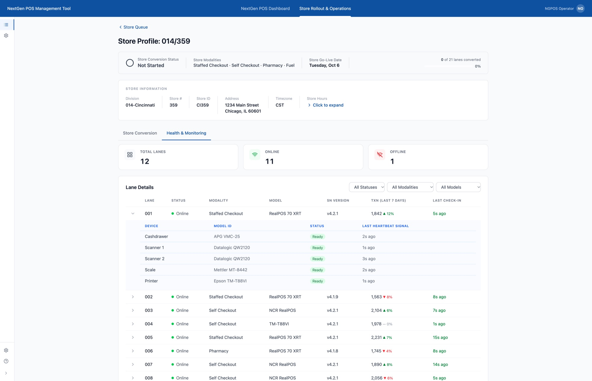

Kroger · NextGen Point of Sale
Replacing the rollout spreadsheet for 2,700+ stores
Kroger is replacing the checkout software in every store. I led design of the tool that decides which stores convert when, who approves it, and what’s blocking the rest.
- Role
- Hands-on lead designer (Senior Product Designer, Kroger’s top design IC level)
- Timeline
- 2026 · about 6 months, joined mid-program
- Team
- Product manager, business stakeholders, offshore engineering team
- Tools
- Figma, Figma Make, Claude Code, Dovetail, Copilot

The problem wasn’t the software. It was the scale.
Before a store can switch to the new point of sale, it has to be ready in five areas: in-store cloud, the electronic control room, networking, terminal refresh and PIN pads.
Readiness for each division belonged to its division rollout manager. These managers worked in their divisions but had a dotted line to the NGPOS program. When I joined, they reported readiness back to a program manager, who consolidated it in spreadsheets. Data was reconciled by hand, statuses conflicted, and dependencies were spotted by eye. The core question, which stores are ready next week, had no quick or trustworthy answer.
That made division rollout managers one of the tool’s most important user groups, and it shaped two parts of the design:
- Self-service. Managers keep their own stores’ readiness current in the tool, instead of feeding updates to someone else to type in.
- Alerts. The tool tells them when something needs their attention, like an approval coming due or a store falling behind, so readiness stays on track between check-ins.
Joining a moving train
I joined about six months into the program, after the previous designer left. Current-state discovery was done and well documented. What didn’t exist yet was a future state: how approvals should work, who owned which decision, and what happened when a store wasn’t ready.
So I didn’t start with screens. I started with a question everyone was answering differently.
“How should this process actually work?”
Kroger grew through acquisitions, so divisions often do the same work in different ways, with different terms and different approval rules. Requirements that sounded simple kept splitting into versions. I ran workshops with product, operations and division stakeholders and turned those assumptions into a shared model: service blueprints, future-state process maps, decision rules and governance flows.


A shared definition of “ready”
One of the first outputs was a status model everyone agreed on. It sounds small, but before this, “ready” meant different things to different teams. The model became the backbone of the Store Queue, the filters and the dashboard.
Store conversion status model
- Not readyStill on the legacy system. Tech readiness incomplete.
- EligibleTech readiness complete and the store’s format is supported.
- ScheduledThe division rollout manager approved a conversion date.
- Training lane convertedOptional. One lane converted early for hands-on training.
- ConvertedAll lanes are on the new point of sale.
Designing the approval: “What am I approving?”
The most important workflow was the approval itself. Ten weeks before a store’s conversion date, its division rollout manager gets an email asking them to approve or decline the date. On paper, that’s two buttons.
Testing the MVP showed it wasn’t. I mapped every step of the current flow against what participants said and did. The same questions came up again and again:
- Some went to the wrong part of the tool to find their approvals.
- They wanted to know what approving actually committed them to.
- Declining felt like a dead end. What date should they suggest, and why were they declining?
- The final confirmation step felt like approving twice.
I took the journey map back into a workshop with stakeholders. Together we worked through the edge cases nobody had documented: remodels, natural disasters, major incidents, stores that miss the deadline, and managers who cover more than one division.


From testing finding to design change
| What we heard in testing | What changed |
|---|---|
| “What does approving this store actually mean?” | Each store card lists the checkout types and lanes being converted, and what’s not included. A plain-language note says approval covers all of them. |
| “If I decline, what date do I pick?” | The decline form opens right on the store card, and its calendar offers only valid conversion days (Tuesdays and Wednesdays). |
| “Nobody will know why I declined.” | A required reason, plus a confirmation that the plan was reviewed with division leadership. |
| “Where do I even go to approve?” | Pending approvals lead the dashboard, with urgency, deadlines and review progress on each one. |
Before: MVP

After: built release



The Store Queue: one row per store
The Store Queue replaced the spreadsheet. I designed it around a few principles that came straight out of discovery:
- One row per store, with each checkout type (staffed, self-checkout, pharmacy, fuel) as a row that expands underneath.
- Prerequisites stay visible. Each workstream’s details sit in its own column group, which you can turn on when you need it.
- Status you can act on. Filters match the shared status model, and you can bulk-edit status fields across many stores at once.
- Risk shows early. Deployable weeks, blackout weeks and capacity are visible right above the table.

An unexpected blocker: configurations
A few months in, store configurations became a major blocker for conversions. These are the settings that control things like till limits, payment types and PIN pad behavior. The vendor platform had configuration tools, but they didn’t fit how Kroger needed to work. More importantly, no one could explain end to end how configuration should work across the enterprise.
I interviewed product leadership, technical leadership and the conversion support team. Then I mapped what they described: who owns each type of setting, how settings are inherited, how changes move through environments, and where approvals belong. That map gave product and engineering a shared mental model, and it unblocked solution discussions that had been going in circles.


Configuration model, simplified
Every setting is inherited downward and can be overridden at a lower level.
- Draft a change plan
- Validate and check for conflicts
- Review and approve (approver can’t be the author)
- Promote through Dev → Test → Stage
- Apply to production stores, with an audit trail
A “change plan” works like a pull request for store settings.

Using AI to move faster, not to think less
I used this project to test how far AI could speed up a senior designer’s workflow without lowering the bar. I used it in three places:
Research
I used AI to draft the test plan and facilitator script, then ran all 7 one-hour sessions myself. Dovetail and Copilot helped me synthesize about 7 hours of transcripts into themes in roughly 4 hours, work that used to take one to two weeks. I checked the themes against what observers saw and refined the summary before sharing it with leadership.
Prototyping
I built working concepts in Figma Make and tested them with the product manager, business stakeholders and end users. Reacting to a working screen instead of a requirement surfaced gaps and edge cases weeks earlier, and it shortened each round of concept and revision.
Front-end code
I built the tool’s front end with Claude Code. That gave me direct control over interaction and layout details that usually get lost in handoff. The offshore engineering team took the code and integrated it with the back end.
What testing told us
Participants understood right away why the tool should exist. Central rollout management, the readiness view, store drill-downs and health monitoring all tested well. The main gap was confidence: people wanted more context before approving something that affects a live store. That finding shaped the next release:
- Readiness context and blockers moved onto the approval and profile screens.
- Project terms were replaced with the words stores and divisions actually use.
- The decline flow was rebuilt around valid dates and a required reason.

Outcome
The larger point-of-sale program paused before this tool reached production, so I can’t point to rollout metrics. What the work did leave behind:
- An agreed future-state process for scheduling, approving and declining store conversions, including the exceptions.
- A tested MVP, a built release that addressed the testing findings, and prototypes for the next phase: fleet, release and configuration management.
- A shared model of configuration ownership that had been missing.
- A front end in production-quality code, ready for engineering to integrate.
Reflection
The hardest problems on this project weren’t interface problems. They were questions the organization hadn’t answered yet: who decides, what “ready” means, what happens when the plan breaks. My most useful work happened before any screen existed.
It also changed how I work. Using AI to synthesize research and write code didn’t replace judgment. It removed the slow parts, so I spent more time with users and stakeholders and less time pushing pixels and notes around. If I did it again, I’d bring the configuration questions forward. They were there from the start, and they only surfaced once they blocked a conversion.